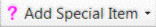

Item/Add Special Item
Toolbar Button:

The Add Special Item menu adds one of a number of different special items.
The Mandatory Crossing Point item is added only to the current course; all other special items are added to all courses. To change what courses a special item appears on, use the Item/Change Displayed Courses command.
Click below to see help on each kind of special item: